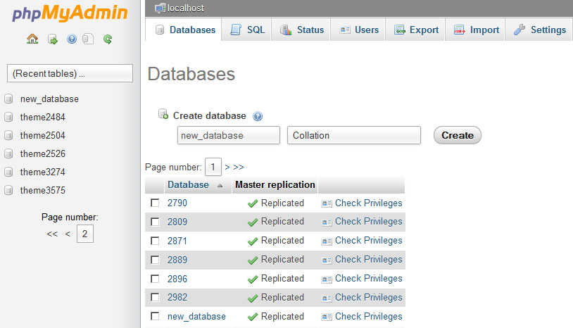

Введение
Благодарим Вас за приобретение шаблона WordPress. Данная документация состоит из нескольких частей и охватывает весь процесс установки и настройки веб-сайта WordPress с нуля.
Что представляет собой WordPress CMS?
WordPress - это бесплатное программное обеспечение с открытым исходным кодом для создания блогов и система управления контентом (CMS) на основе PHP и MySQL. Она позволяет создавать веб-сайты и мощные онлайн приложения, а также почти не требует технических навыков или знаний в управлении. Множество особенностей, в том числе простота использования и расширяемость, сделали WordPress наиболее популярной программой для веб-сайтов. Детали
Что такое шаблон WordPress
Шаблон WordPress - это тема для платформы WordPress CMS. Другими словами, вы можете легко изменить внешний вид веб-сайта WordPress путем установки нового шаблона за несколько несложных шагов. При всей своей простоте, шаблон WordPress содержит все необходимые исходные файлы, которые можно редактировать желаемым образом.
Структура шаблона
Приобретенный комплект шаблона состоит из нескольких папок. Проверим содержимое каждой папки:
- documentation - содержит файлы документации.
- documentation.html - основной файл документации. Вы его сейчас читаете :)
- screenshots - содержит скриншоты шаблона. Для работы с шаблоном они не требуются.
- sources.zip - содержит исходные файлы темы.
- psd - исходные файлы шаблона для Adobe Photoshop(.psd).
- theme - содержит файлы темы WordPress.
- CherryFramework.zip - архив с темой Cherry Framework. Включает все файлы темы. Необходимо устанавливать через менеджер расширений WordPress.
- theme####.zip - архив с темой (дочерняя тема). Содержит все файлы темы. Необходимо устанавливать через менеджер расширений WordPress.
- sample_data - содержит файлы, которые используются для того чтобы сделать сайт WordPress таким же, как наше демо.
- sample_data.xml - включает все демо-данные шаблона (записи, страницы, категории и т.п.).
- widgets.json - файл настроек виджетов.
- различные изображения и другие медиа файлы
- manuall_install - содержит файлы, которые используются для того чтобы сделать сайт WordPress таким же, как наше демо.
- uploads - содержит изображения темы.
- theme#####.sql - файл базы данных (вмещает контент темы).
- license.txt - файл с информацией о лицензии.
- fonts_info.txt - файл со ссылками на скачку шрифтов, используемых в шаблоне.
- info.txt - инструкции по разархивированию исходных файлов.
Подготовка
Прежде чем перейти к установке веб-сайта WordPress, нужно полностью подготовиться. Рекомендуется выполнить следующие подготовительные шаги:
Программное обеспечение
Для полноценной работы с шаблоном WordPress мы рекомендуем скачать все требуемые приложения. Список необходимого программного обеспечения находится на странице предпросмотра шаблона.
Требования для различных шаблонов могут меняться, поэтому мы перечислим самые основные:
- Прежде всего нужны правильные приложения для распаковывания защищенного паролем архива sources_#########.zip. Можно воспользоваться WinZip 9+ (Windows) и Stuffit Expander 10+ (Mac).
- Также может понадобиться программа Adobe Photoshop. Она используется для редактирования исходных файлов .PSD и необходима, если требуется изменить графический дизайн и изображения шаблона.
- Для редактирования исходного кода файлов шаблона нужно использовать редактор кода, например Adobe Dreamweaver, Notepad++, Sublime Text и т.п.
- Чтобы загрузить файлы на хостинг сервер, потребуется FTP менеджер, например Total Commander, FileZilla, CuteFTP и т.д.
Хостинг
Поскольку WordPress CMS является приложением PHP/MySQL, необходимо подготовить хостинг сервер.
При наличии активного сервера, нужно проверить его на соответствие требованиям WordPress и на готовность использовать веб-сайты WordPress.
Также можно установить WordPress на компьютер при помощи локального сервера. Для создания локального хостинг сервера необходимо использовать программное обеспечение WAMP, AppServ, MAMP и т.п. Любое из них устанавливается как обычная программа и поддерживает WordPress.
Вы можете воспользоваться следующими туториалами для настройки локального сервера:
Установка шаблона
Установка шаблона еще никогда не была настолько проста. Процесс установки включает в себя всего три шага: установка Cherry Framework, установка дочерней темы и установка демо-данных.
Все этапы установки выполняются в админ-панели WordPress. Это делает процесс удобным и быстрым.
Шаг 1.
Text
Text
Text
Text
Text
Text
Text
Text
Шаг 2.
Text
Text
Text
Text
Text
Text
Text
Text
Шаг 3.
Text
Text
Text
Text
Text
Text
Text
Text
Шаблоны страниц
Page 1
Text
Text
Text
Text
Text
Text
Text
Text
Page 2
Text
Text
Text
Text
Text
Text
Text
Text
Page 3
Text
Text
Text
Text
Text
Text
Text
Text
Page 4
Text
Text
Text
Text
Text
Text
Text
Text
Page 5
Text
Text
Text
Text
Text
Text
Text
Text
Посты (записи), категории и форматы постов
Добавление категории
Более детальную информацию о добавлении категорий можно найти в следующей статье: http://codex.wordpress.org/Manage_Categories_SubPanel

- Войдите в панель управления WordPress.
- Откройте вкладку Posts (Записи).
- Перейдите в Categories (Категории) для записей блога.
- Введите название новой категории.
- После этого щелкните кнопку Add New Category (Добавить новую категорию).
Создание записи блога

- Войдите в панель управления WordPress.
- Откройте вкладку Posts (Записи).
- Нажмите Add New (Добавить новую).
- Добавьте контент в запись. Более детальную информацию о добавлении записей можно найти по ссылке http://codex.wordpress.org/Posts_Add_New_SubPanel.
Выбор формата записи
Более детальную информацию о форматах записей можно найти по ссылке: http://codex.wordpress.org/Post_Formats.

- Войдите в панель управления WordPress.
- Откройте вкладку Posts (Записи).
- Чтобы выбрать формат записи, откройте список Format (Формат).
Ниже находится список доступных форматов записей с описаниями и настройками.
Стандартный формат записи
Обычная, стандартная запись имеет следующие поля:
- Post title - заголовок записи
- Post content - контент записи
- Categories - категория (и) записи
- Tags - теги записи
- Featured Image - изображение записи
- и другие поля, которые можно включить в разделе Screen Options (Настройки экрана) в верхнем правом углу.
Стандартный формат записи
Заметка
Представляет собой упрощенную стандартную версию записи. Другими словами, в ней находится только поле для контента, поэтому не требуется вводить заголовок записи и другие опции.
Заметка
Галерея
Основной особенностью данного формата записи является возможность добавления неограниченного количества изображений.
Добавление галереи:
- Нажмите кнопку Add Media (Добавить медиа).

- Чтобы добавить изображения с компьютера, перетяните файлы в появившееся поле или щелкните Select Files (Обзор).

- После загрузки все картинки находятся в Media Library (Медиа библиотека). Выберите Uploaded to this post (Добавленные в эту запись) для просмотра изображений.

- По окончанию редактирования можно закрыть медиа библиотеку. Загруженные картинки будут добавлены автоматически.
В записях формата галерея находятся те же поля (например, заголовок, контент, категории, и т.п.), что и для стандартного формата записи.
Ссылка

Ссылка
Формат Ссылка содержит дополнительное поле URL, где нужно указать ссылку (URL) для целевой страницы/ресурса. Заголовок записи будет использоваться в качестве текста ссылки.
Поле контента представляет собой описание целевой страницы/ресурса.
Изображение

Изображение
Изображение - это формат записи в виде одиночного изображения, загруженного через опцию Featured Image (Изображение записи).
Выбрав данный формат, вы сможете отключить лайтбокс для изображений при помощи соответствующей настройки Enable Lightbox (Включить лайтбокс) .
Цитата

Цитата
Пост Цитата используется для публикации высказываний.
Данный формат отличается наличием дополнительный полей Цитата - текста высказывания и Автор - имя автора цитаты.
Аудио

Аудио
Формат Аудио используется для публикации аудио-контента.
Отличается наличием следующих настроек:
- Title (Заголовок) - название трека
- Artist (Исполнитель) - исполнитель аудиотрека
- Audio Format (Формат аудио) - формат аудиотрека
- Audio URL (URL аудио) - прямая ссылка на аудиотрек
Видео
Видео
Видео используется для публикации видео-контента.
Отличается наличием следующих настроек:
- Title (Заголовок) - название видеоклипа
- Artist (Исполнитель) - исполнитель видеоклипа
- URL #1 - прямая ссылка на видеоклип в формате m4v
- URL #2 - прямая ссылка на видеоклип в формате ogv
- Embedded Code (Встроенный код) - используется для добавления видео с внешних ресурсов, например, youtube, vimeo, и т.д.
Создание записи слайдера

Слайды, по сути, являются пользовательским типом записей, что отличает их от обычных записей, например, блога. Благодаря этому, очень легко управлять контентом сайта.
Создание записи слайдера
- Войдите в панель управления WordPress.
- Откройте меню Slider (Слайдер) .
- Нажмите вкладку Add New (Добавить новый).
- Введите title (заголовок) слайдера.
- Загрузите изображение в опции Featured Image (Изображение записи) (щелкните ссылку Set featured image (Установить Изображение записи)).
- Для слайда можно использовать следующие поля:
- Caption (Надпись) - поля для надписи слайда.
- URL - поле для URL слайда (можно использовать внешнюю ссылку).
- Когда настройки заданы, нажмите кнопку Publish (Опубликовать).
Добавление записи портфолио

Элементы портфолио, по сути, являются пользовательским типом записей, http://codex.wordpress.org/Post_Types#Custom_Types что отличает их от обычных записей. Благодаря этому, очень легко управлять контентом сайта.

Добавление записей портфолио
- Войдите в панель управления WordPress.
- Откройте меню Portfolio (Портфолио) .
- Нажмите вкладку Add New (Добавить новый).
- Заполните все необходимые поля (заголовок, контент).
- Загрузите изображение в опции Featured Image (Изображение записи) (щелкните ссылку Set featured image (Установить Изображение записи)).
- Нажмите кнопку Publish (Опубликовать).
Выбор формата записи портфолио

Создание записи портфолио в данной теме позволяет выбрать один из доступных типов записей.
- Image (Изображение) - тип записи галереи по умолчанию. Отображает только Изображение записи.
- Slideshow (Слайдшоу) - проект галереи отображается в виде слайдшоу. Может содержать неограниченное количество изображений записи.
- Grid Gallery (Сетка галереи) - картинки записи отображаются в виде галереи. Может вмещать неограниченное количество изображений записи.
- Video (Видео) - в данном типе записи можно добавлять видео клип с любого видео хостинга (YouTube, Vimeo, и т.п.).
- Audio (Аудио) - этот тип записи позволяет добавлять аудио ссылку.
Добавление записи "отзыв" (Testimonials)

Добавление записи "отзыв" (Testimonials)
- Войдите в панель управления WordPress.
- Откройте меню Testimonials (Отзывы).
- Нажмите вкладку Add New (Добавить новый).
- Заполните все необходимые поля (заголовок, контент).
- Загрузите изображение в опции Featured Image (Изображение записи) (щелкните ссылку Set featured image (Установить Изображение записи)).
- В данном типе записей можно использовать следующие настройки:
- Name (Имя) - имя автора
- URL - ссылка автора
- Info - дополнительная информация от автора.
- Нажмите кнопку Publish (Опубликовать)
Добавление записи FAQs
Добавление записи FAQs
- Войдите в панель управления WordPress.
- Откройте меню FAQs.
- Нажмите вкладку Add New (Добавить новый).
- Поскольку данный тип записей представляет собой вопросы/ответы, заголовком поста является вопрос, а контентом - ответ.
- Нажмите кнопку Publish (Опубликовать).
Добавление записи "Наша команда" (Our Team)

Добавление записи "Наша команда" (Our Team)
- Войдите в панель управления WordPress.
- Откройте меню Our Team (Наша команда).
- Нажмите вкладку Add New (Добавить новый).
- Заполните все необходимые поля (заголовок, контент).
- Загрузите изображение в опции Featured Image (Изображение записи) (щелкните ссылку Set featured image (Установить Изображение записи)).
- В данном типе записей можно использовать следующие настройки:
- Position (Должность) - должность человека.
- Info - Дополнительная информация.
- Нажмите кнопку Publish (Опубликовать)
Опции Cherry
В данной теме есть опция настроек. Они позволяют изменить цветовую схему темы, порядок элементов, включать/выключать элементы и многое другое. Чтобы использовать данные настройки, перейдите в меню Appearance (Внешний вид) → Cherry Options (Опции Cherry).
General
Text
Styling
Text
Header
Text
Footer
Text
Navigation
Text
Breadcrumbs
Text
Pagination
Text
Megamenu
Text
Шорткоды
Шорткоды - мощный инструмент управления контентом http://codex.wordpress.org/Shortcode. Они очень просты в использовании. Прежде всего, нужно выбрать режим редактирования Visual (Визуальный).
Favorites
Text
Base Markup
Text
Elements
Text
Components
Text
Lightbox
Text
Chart
Text
Post
Text
Table
Text
Tabs
Text
HTML5
Text
Редактор шорткодов
Text
Плагины
Text
Cherry Plugins
Text
Cherry Parallax Slider
Text
Cherry Lazy Load
Text
Full Bg Slider
Text
Cherry Media Parallax Plugin
Text
Cherry Single Carousel
Text
Third-party Plugins
Text
Виджеты
Text
FAQ
Установка движка
Скачайте требуемую версию движка WordPress. Ее можно увидеть на странице предпросмотра шаблона в списке требований. Убедитесь, что вы скачиваете требуемую версию.
- Движок WordPress можно скачать на официальном сайте WordPress.org Скачать WordPress. Если нужна более ранняя версия, нажмите ссылку Архивы версий.
- После скачивания необходимо распаковать файлы движка и шаблона. Чтобы разархивировать файл ZIP движка WordPress, можно использовать любой архиватор, поддерживающий формат ZIP.
Следующие туториалы покажут, как распаковать файлы в ОС Windows(WinZip) и MAC(StuffitExpander).
- После разархивирования файлы и папки движка WordPress нужно загрузить на хостинг сервер.
Загружать на сервер нужно все файлы и папки в директорию PUBLIC_HTML или WWW.
Если вы не можете найти директории PUBLIC_HTML или WWW на хостинг сервере, обратитесь к хостинг провайдеру и уточните, куда нужно загружать файлы веб-сайта.Вы также можете воспользоваться данными туториалами для более детальной информации о том, как загружать файлы на сервер:
- На следующем этапе нужно создать базу данных для движка WordPress.
Ее можно создать через инструмент управления базами данных в контрольной панели хостинга (обычно PhpMyAdmin).
При помощи phpMyAdmin вы можете создать новую базу данных за 3 простых шага: (см. следующие слайды):
- Щелкните кнопку Database (база данных) в верхнем меню навигации, чтобы перейти в список баз данных.
- Введите название базы данных в поле "Create new database (Создать новую базу данных)".
- Нажмите справа на кнопку Create (Создать).
База данных появилась в списке. Кликните по названию, чтобы получить доступ к ней.
-

1. Щелкните кнопку "Databases (Базы данных)", чтобы открыть список баз данных.
-

2. Введите название базы данных.
3. Нажмите кнопку "Create (Создать)". -

4. База данных появилась в списке. Кликните по названию, чтобы получить доступ в нее.
Вы также можете воспользоваться детальным видео туториалом Как создать базу данных
При возникновении сложностей при создании базы данных, необходимо обратиться к хостинг провайдеру за поддержкой.Вы также можете воспользоваться следующими туториалами:
- Пропишите путь к директории WordPress в адресной строке браузера и нажмите клавишу Enter. После этого начнется процедура установки.
- Создание файла конфигурации. На экране установки WordPress появится сообщение, что отсутствует файл конфигурации. Нажмите кнопку "Create Configuration File (Создать файл конфигурации)", чтобы создать его.

- Детали базы данных. Здесь нужно ввести детали подключения к базе данных WordPress.

- Детали веб-сайта. На данном экране нужно ввести следующие детали:
- название веб-сайта.
- имя и пароль администратора.
- email адрес веб-сайта.

- Щелкните кнопку "Install WordPress (Установить WordPress)".

Если были указаны верные детали, появится сообщение об успешной установке и кнопка входа в панель управления WordPress.
Вы также можете воспользоваться детальными видео туториалами:
- Как установить движок на сервер HostGator (ручная установка)
- Как установить движок на сервер Bluehost (ручная установка)
- Как установить движок на сервер SiteGround (ручная установка)
- Как установить движок на сервер GoDaddy (ручная установка)
- Как установить движок на сервер Just Host (ручная установка)
Установка темы вручную
В случае возникновения сложностей при установке демо-данных воспользуйтесь следующими инструкциями.
ВНИМАНИЕ: Импорт файла SQL в базу данных перезапишет существующий контент и настройки веб-сайта. НЕ импортируйте файл SQL, если нужно сохранить текущий контент.
ПАМЯТКА: Всегда делайте резервное копирование базы данных, прежде чем приступить к изменениям.
Префикс таблиц базы данных WordPress должен быть wp_.

Ручная установка
В случае возникновения сложностей при установке через панель управления, можно воспользоваться альтернативным способом.
Загрузка через FTP:
Для использования данного метода, нужно иметь доступ к файлам WordPress на FTP сервере через файловый менеджер контрольной панели хостинга или FTP-клиент, например Filezilla, CuteFTP, Total Commander, и т.п.
Если вы установили тему с демо-данными или вручную, а тема отличается от демо, откройте Cherry Options (Опции Cherry) и нажмите "Restore Defaults (Восстановить настройки по умолчанию)."
- Разархивируйте файлы CherryFramework.zip и theme####.zip в папку на компьютере (щелкните правой кнопкой по каждому файлу.zip, выберите Unzip to… (Распаковать в ...) CherryFramework и theme#### соответственно, после чего появятся две папки: CherryFramework и theme####).
- Загрузите папки CherryFramework и theme### в директорию /wp-content/themes/ на FTP сервере.
- Войдите в панель управления WordPress (добавьте /wp-admin к доменному имени сайта в адресной строке браузера).
- Перейдите в меню Appearance (Внешний вид) > Themes (Темы).
- В разделе Available Themes (Доступные темы) найдите theme#### и активируйте ее, щелкнув по кнопке Activate (Активировать).
Установка Sample Data
Чтобы веб-сайт WordPress выглядел как на демо, следуйте данным инструкциям.
- Тема должна быть установлена согласно следующим указаниям.
- Скопируйте папку "uploads" (она находится в папке theme/manual_install/ шаблона) в папку /wp-content/ на FTP сервере.
- Откройте файл theme####.sql из папки theme/manual_install/ в любом текстовом редакторе (рекомендуется Dreamweaver или Notepad) и замените все строки "your_website_url_here" на URL вашего веб-сайта в документе при помощи опции Find and Replace (Найти и Заменить) (окно вызывается горячими клавишами Ctrl+H). Например: http://www.mywebsite.com
- В конце адреса не должно быть знака косой черты "/" и url должен начинаться с http://www.
- Сохраните изменения и закройте файл.
- Теперь файл дампа можно импортировать через phpMyAdmin или другой инструмент управления базами данных.
Установка базы данных вручную
В случае возникновения сложностей при установке демо-данных воспользуйтесь следующими инструкциями.
ВНИМАНИЕ: Импорт файла SQL в базу данных перезапишет существующий контент и настройки веб-сайта. НЕ импортируйте файл SQL, если нужно сохранить текущий контент.
ПАМЯТКА: Всегда делайте резервное копирование базы данных, прежде чем приступить к изменениям.
Префикс таблиц базы данных WordPress должен быть wp_.
Чтобы веб-сайт WordPress выглядел как на демо, следуйте данным инструкциям.
- Тема должна быть установлена согласно следующим указаниям.
- Скопируйте папку "uploads" (она находится в папке theme/manual_install/ шаблона) в папку /wp-content/ на FTP сервере.
- Откройте файл theme####.sql из папки theme/manual_install/ в любом текстовом редакторе (рекомендуется Dreamweaver или Notepad) и замените все строки "your_website_url_here" на URL вашего веб-сайта в документе при помощи опции Find and Replace (Найти и Заменить) (окно вызывается горячими клавишами Ctrl+H). Например: http://www.mywebsite.com
- В конце адреса не должно быть знака косой черты "/" и url должен начинаться с http://www.
- Сохраните изменения и закройте файл.
- Теперь файл дампа можно импортировать через phpMyAdmin или другой инструмент управления базами данных.
В случае возникновения сложностей при установке через панель управления, можно воспользоваться альтернативным способом.
Загрузка через FTP:
Для использования данного метода, нужно иметь доступ к файлам WordPress на FTP сервере через файловый менеджер контрольной панели хостинга или FTP-клиент, например Filezilla, CuteFTP, Total Commander, и т.п.
Если вы установили тему с демо-данными или вручную, а тема отличается от демо, откройте Cherry Options (Опции Cherry) и нажмите "Restore Defaults (Восстановить настройки по умолчанию)."
- Разархивируйте файлы CherryFramework.zip и theme####.zip в папку на компьютере (щелкните правой кнопкой по каждому файлу.zip, выберите Unzip to… (Распаковать в ...) CherryFramework и theme#### соответственно, после чего появятся две папки: CherryFramework и theme####).
- Загрузите папки CherryFramework и theme### в директорию /wp-content/themes/ на FTP сервере.
- Войдите в панель управления WordPress (добавьте /wp-admin к доменному имени сайта в адресной строке браузера).
- Перейдите в меню Appearance (Внешний вид) > Themes (Темы).
- В разделе Available Themes (Доступные темы) найдите theme#### и активируйте ее, щелкнув по кнопке Activate (Активировать).
Установка плагинов
После установки и активации темы иногда требуется установить дополнительные плагины:
- Если тема установлена и активирована, то в левой верхней части страницы вы увидите уведомление с рекомендацией установить плагины. Перейдите по ссылке Begin installing plugin (Начать установку плагинов).
Также вы можете установить плагины выбрав в меню пункт Appearance- > Install Plugins (Внешний вид - > Установить Плагины) - Отметьте нужные плагины.
- В выпадающем меню Bulk Actions (Массовые Действия) выберите Install и нажмите кнопку Apply (Применить).
Дополнение
Мы постарались сделать данную документацию как можно более доступной и понятной. Тем не менее, в случае возникновения любых сложностей с WordPress шаблоном, предложений по улучшению шаблонов или документации, с командой технической поддержки можно связаться следующим образом:
Помощь и поддержка
Решение возможных проблем с веб-шрифтами
В случае некорректного отображения веб-шрифтов после установки, откройте для редактирования файл .... шаблона ..... Далее найдите строку вида "...." и измените ее на строку вида "....".